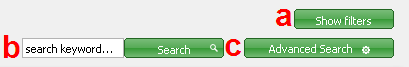
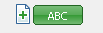
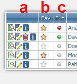
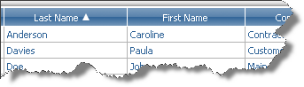
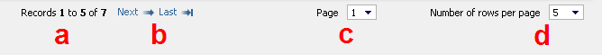

The title to the left gives information which module or what type of records is displayed.
The selection to the right gives the choice from three basic filters: whether you want to display all records, recently used ones or favorite ones. To learn more about "Recent" or "Favorites" click here.

Here you can find two very useful tools that will help you navigate through your records. Filters reduce the amount of displayed records by selecting only these fulfilling chosen criteria and search tool does that by selecting only the records that contain chosen words, phrases, etc.
a) "Show filters" button. Click this button to get the filtering options. Click here to learn more about filters and using them.
b) Simple search. Write the word or phrase that you are looking for and click "Search" button. Click here to learn more about search options.
c) Advanced search. This tool allows you more complex search, when you want, for example, a certain word in a specific field or a few different word fragments in a few different fields. Click here to learn more.

The "plus" button to the left serves as the easy way of adding new records. Clicking it will open a filling form.
The "ABC" button is a tool of a basic alphabetic filter. Clicking it will display a list:

Choose one of the options from this list, for example "C", to display only the records starting with selected letter. The "123" option displays all records starting with numbers and "All" removes the fiter and displays all records.

Tools and options gathered in this section will help you manage your records.
a) Actions. Here you can view the record in details (click
 ), edit it (click
), edit it (click  ), view the information about the record (hover mouse over
), view the information about the record (hover mouse over  ) and if it's created or owned by you - remove it (click
) and if it's created or owned by you - remove it (click  ).
).
b) Favorites. The records marked with a coloured star are the ones chosen by you as your favourite. Here you can also change the "favourite" status of the record - click on the to remove the record from your favourites and to make it your favourite - click . Click here to learn more about favorites.
c) Subscriptions. This functionality keeps you up-to-date. A green dot (
 ) means that you're subscribing the record (tracking changes) and that you've seen the latest version of it. A red dot (
) means that you're subscribing the record (tracking changes) and that you've seen the latest version of it. A red dot ( ) also means that you're subscribing the record, but you haven't seen the latest version of it - you are not up-to-date. Hover mouse over the red dot to see the changes that have been made since you last saw the record. Clicking either red or green dot will unsubscribe the record. A grey dot () means that you're not subscribing the record and clicking it will start the subscription. Click here to learn more about subscriptions.
) also means that you're subscribing the record, but you haven't seen the latest version of it - you are not up-to-date. Hover mouse over the red dot to see the changes that have been made since you last saw the record. Clicking either red or green dot will unsubscribe the record. A grey dot () means that you're not subscribing the record and clicking it will start the subscription. Click here to learn more about subscriptions.

In this section you will find the most important part - the data, the content of the records. It also works as a sorting tool. On the picture below you can see a fragment of an example set of records from Contacts module.
On the picture you can see blue labels (with "Last Name" and "First Name" written on them). They inform you what information is in the column below. You can use these labels to sort the records by the value of the column below the label. It's simple - just click the chosen label. Clicking it more than once will switch between ascending and descending order.
Ascending order is marked with a triangle pointing to the top. It looks like this:
Descending order is marked with a triangle fliped upside down and it looks like this:

When there are many records, they often must be displayed by pages. On the bottom you will find a tool, that will let you easily navigate through all the pages.
a) Here you can see, which records are displayed at the moment.
b) These buttons help you navigate through the pages. On the first page you will see only these two ("Next" and "Last"), but on other pages you will also see "First" and "Prev" buttons (on the picture below), that will let you go back to the previous pages.
c) Here you can jump to a specific page. Choose the right number from the select box.
d) Here you can set the number of records that will be displayed per page - the more records per page, the less pages.
 - history. Click this button to see detailed history of all changes that were made to the record. If there weren't any changes, the button is inactive and it looks like this:
- history. Click this button to see detailed history of all changes that were made to the record. If there weren't any changes, the button is inactive and it looks like this:  .
.
 ,
,  ,
,  - these buttons and some other may appear on this action panel depending on the type of the record. These ones create new event, task or phonecall connected with the record.
- these buttons and some other may appear on this action panel depending on the type of the record. These ones create new event, task or phonecall connected with the record.
 - new note. Click here to add a new note to the record. To learn more about notes
- new note. Click here to add a new note to the record. To learn more about notes